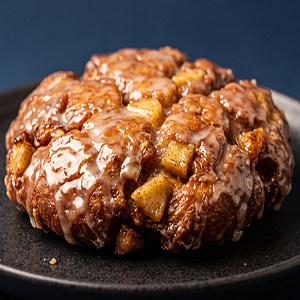

Baked Apple Fritters
Recipe Overview
Yields: 14 servings | Prep time: 20 minutes | Total Time: 1 hour 15 minutes

Ingredients
- 2 1/4 cups all-purpose flour
- 3/4 cup granulated sugar
- 2 tsp. baking powder
- 1 1/2 tsp. ground cinnamon
- 1 tsp. kosher salt + a pinch for glaze
- 1/4 tsp. finely grated fresh nutmeg
- 6 tbsp. unsalted butter, cold, cubed
- 2 medium Granny Smith apples, peeled, cored, finely chopped
- 2 eggs
- 1/2 cup heavy cream
- 1 tsp. pure vanilla extract
- 1/4 cup milk (for glaze)
- 2 cups confectioners sugar (for glaze)
Directions
First, gather the ingredients for the fritters. Preheat the oven to 425°F (220°C) and then gather 2 baking sheets. Line them with parchment paper. In a big bowl, mix the flour, sugar, baking powder, cinnamon, salt, and nutmeg together well. Add the butter and work it into the mixture, using your hands to break the butter down into pea-sized pieces. Add the apple pieces into the bowl and coat them well. Get a small bowl and mix the eggs, cream, and vanilla together. Add the small bowl to big bowl and mix until the batter becomes lumpy and sticky. Scoop the batter onto the baking sheets using a 1/4-cup measuring cup or a large cookie scoop. Bake the batter for 12-15 minutes until the tops are slightly golden and the edges are firm, rotating the baking sheets top to bottom halfway through. Let the fritters cool for 5 minutes, and then transfer them to a wire rack to cool completely.
Next, gather the ingredients for the glaze. Get a medium bowl and stir the confectioners sugar, milk, and salt until it runs off your spoon easily. Add more milk if needed, 1 teaspoon at a time, until the glaze is thin enough to dip the fritters in. Once the fritters are ready, dip the tops of them into the glaze and place them back on the rack. Wait approximately 10 minutes for the glaze to harden.